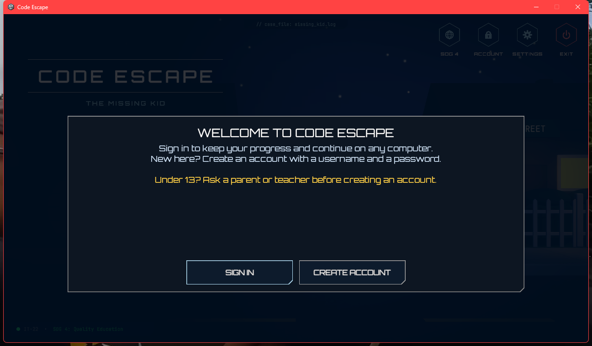

Code Escape: Build, Test and Release of Version 0.1.0
Capstone Project (Unity, Windows)
| Group Number | IT22 |
| Group Members | Jean Joseph C. Mallari Mark Daniel M. Haguisan Louis Angelo D. Junio Alynus Job C. Tombado |
| Release | Version 0.1.0 (testing build), 8 November 2026 |
| Source | Branch release-v0.1.0, commit f8b27a8, tag v0.1.0 |
| Repository | https://github.com/jjcmall/Code-Escape-IT22 |
| Release artifact | CodeEscape-v0.1.0.zip (64.5 MB) |
| Course / Section | [Course and section] |
| Instructor | [Instructor] |
Status: the build, package, tag and release notes are done. The tests that need a real account, and a test on a second computer, are marked as not run and are still to be done by the group.
| Environment | Where / Platform | Purpose | Required Software / Dependencies |
|---|---|---|---|
| Development | Windows 11 PC with the Unity Editor | Write and test the game; commit to Git | Unity 6000.5.10f1 (C#, URP, Input System, uGUI), a code editor (VS Code settings are in the repository), Git with GitHub Desktop, a Unity account linked to the project for Unity Gaming Services |
| Testing | (1) A clean folder on the same PC, run from the extracted zip, outside the editor (done 8 Nov 2026). (2) A second Windows computer of another member (to be done). | Check that the packaged release runs without the development setup | Windows 10 or 11, 64-bit; internet connection; no Unity Editor needed |
| Release / Target | Windows 64-bit desktop or laptop (student computers, school laboratory) | The player runs the game | CodeEscape-v0.1.0.zip (the packaged build); internet for sign-in and Cloud Save through Unity Gaming Services |
| Technology | Needed? | Intended Use | Reason |
|---|---|---|---|
| Virtual Machine | Possibly | A clean Windows environment for testing the release, if no second computer is available | Users run the game directly on Windows, so a VM is not needed to run it. It would only help to test a fresh Windows install. For this release the test used a clean folder with no previous game data, and a second computer is preferred. |
| Container / Docker | No | None | The game is a desktop client. There is no backend service of our own to package, because accounts and progress use Unity Authentication and Cloud Save. |
| Cloud Platform | Yes | Unity Gaming Services: Authentication (username and password) and Cloud Save | Progress must belong to a student account and load on any computer. This is an existing project requirement, not extra infrastructure. |
Convention: MAJOR.MINOR.PATCH, with a v prefix in tags and file names.
| Current Version | 0.1.0 (testing build) |
| Version Number | 0.1.0, stored in Unity as bundleVersion (commit f8b27a8) and tagged v0.1.0 |
| Reason for Version Number | MAJOR is 0 because the capstone is not yet the agreed complete release. MINOR is 1 because this is the first controlled build with the working game. PATCH is 0 because it is not a fix release. |
| Included Features | Python puzzle game with six levels on a level map; 32 Python challenges checked by running code in a sandboxed interpreter; learning cards, hints and scoring; achievements and level stars; story systems and the prologue comic; username and password accounts with Cloud Save progress; one shared menu theme. |
| Excluded / Planned Features | PHP and SQL challenges (content is kept for future versions); builds for platforms other than Windows; a password reset inside the game. |
| Change | Version After Change | Reason |
|---|---|---|
| Fix an incorrect score calculation | 0.1.1 | A fix with no new feature raises PATCH. |
| Add leaderboard functionality | 0.2.0 | A new working feature raises MINOR and resets PATCH. |
| Major redesign affecting saved data compatibility | 1.0.0 (or 2.0.0 once 1.0.0 exists) | An incompatible change raises MAJOR. While we are on 0.x, the first MAJOR is the agreed 1.0.0. |
| Release Check | Status | Evidence / Remarks |
|---|---|---|
| Required changes have been reviewed | Fail | Pull Request #1 (refactor/save-progress) is open with no reviewer. The menu theme branch has no pull request yet. |
| Accepted changes are integrated | Fail | The release branch release-v0.1.0 carries the commits of both task branches, but they are not merged into main yet. |
| Correct source version is being used | Pass | The build was made from a clean checkout of commit f8b27a8 (no uncommitted files), tagged v0.1.0. |
| Project opens without critical errors | Pass | The Unity Console showed no errors in the editor, and the batch build compiled with 0 compile errors. |
| Required scenes/modules are included | Pass | All 12 scenes are enabled in Build Settings (main menu, language select, level map, intro, six levels, ending, results). |
| Database/configuration is correct for testing | Pass | The project is linked to its Unity Cloud project. In the editor on 8 Nov 2026 the game signed in, loaded and saved progress to Cloud Save. The packaged build was only checked up to the welcome screen. |
| Temporary/debug content is reviewed | Partial | The test scaffold folder Assets/playmode test is untracked and is not in the commit. A full review of debug content in scenes was not done. |
| Target platform is selected correctly | Pass | Windows 64-bit (StandaloneWindows64). |
| Version number is updated | Pass | bundleVersion changed from 1.0 to 0.1.0 in commit f8b27a8. |
| Build can be produced successfully | Pass | Unity batch build, result Success, 9.5 minutes. |
f8b27a8 on release-v0.1.0).-buildWindows64Player, which builds the scenes enabled in Build Settings.README.txt, VERSION.txt and RELEASE_NOTES.txt, and zipped it.v0.1.0.| Build result | Success, 0 compile errors, 9.5 minutes (including the first asset import of the clean checkout) |
| Release folder | CodeEscape-v0.1.0/: CodeEscape.exe, CodeEscape_Data/, UnityPlayer.dll, MonoBleedingEdge/, D3D12/, DirectML.dll, dstorage.dll, dstoragecore.dll, UnityCrashHandler64.exe, README.txt, VERSION.txt, RELEASE_NOTES.txt |
| Size | 189 MB unpacked; CodeEscape-v0.1.0.zip is 64.5 MB |
| SHA-256 of the zip | 6AA6FE4345CE2A7C8FEA932C38A88EBCE57EF0D8E344744CBA8E29043F43EC6A |
| Version identification | The version is in VERSION.txt, README.txt, the zip name and the Unity setting bundleVersion. It is not shown inside the game menus, and the exe file properties show the Unity engine version, not the game version. |

The packaged build (CodeEscape.exe from the extracted zip) after launch: the welcome screen with SIGN IN and CREATE ACCOUNT.
CodeEscape.exe (not from the Unity Editor). No previous game data existed for the standalone game on this PC (no saved settings, no log), so it ran as a first-time user. It is the same computer used for development, so a test on a second computer is still needed. Date: 8 November 2026.| Release Test | Expected Result | Actual Result | Status |
|---|---|---|---|
| Application launches | The application opens normally | The window titled "Code Escape" opened, stayed running and responsive after 25 seconds, using about 790 MB of memory. | Pass |
| Main feature works | A player can sign in and play a level | The welcome screen with SIGN IN and CREATE ACCOUNT appeared. Signing in and playing a level was not tested because it needs a real account. | Not run |
| Save/load works | Progress is saved and loaded with an account | Not tested on the packaged build (needs an account). The same save and load logic passed 8 of 8 tests in the Unity Editor on 8 Nov 2026. | Not run |
| Required assets load | Menu scene, fonts, sprites and background load without errors | The main menu background, the Orbitron font and the themed panel and buttons are visible. Player.log has no errors or exceptions. Other scenes were not opened. | Pass (main menu only) |
| Application can close normally | The window closes without a crash | The window was closed, the process ended, and the log ends with a normal shutdown. | Pass |
| Version is identifiable | The version can be found | VERSION.txt in the release folder says 0.1.0 with the commit and tag, and the zip name contains v0.1.0. The game menus do not show it. | Pass (by file) |
Result: 4 passed, 2 not run. The two that were not run are the ones that need a real account, so the group should run them on a second computer before calling the release tested.
| Project | Code Escape (Group IT22) |
| Version | 0.1.0 |
| Release Date | 8 November 2026 |
| Release Type | Testing |
| Source Version / Branch / Changeset | Tag v0.1.0, commit f8b27a8, branch release-v0.1.0 |
CloudProgressService into ProgressRecordBuilder and ProgressSnapshotApplier.CodeEscape-v0.1.0.zip to a normal folder. Do not run it from inside the zip.CodeEscape.exe. If Windows SmartScreen warns, choose More info, then Run anyway.Released build -> Version 0.1.0 -> Tag v0.1.0 -> Commit f8b27a8 (branch release-v0.1.0) Build input : clean checkout of f8b27a8, Unity 6000.5.10f1, StandaloneWindows64 Artifact : CodeEscape-v0.1.0.zip, SHA-256 6AA6FE43...43EC6A
The same release notes are in the repository as Documentation/Releases/RELEASE_NOTES_v0.1.0.md and inside the zip as RELEASE_NOTES.txt.
Develop Changes (task branch) -> Review and Integrate (pull request, review, merge to main) -> Determine New Version Number -> Update Version (Unity bundleVersion, commit) -> Build (clean checkout of that commit, batch build) -> Test Packaged Build (from the extracted zip, on a second computer) -> Create Release Notes (Documentation/Releases) -> Label / Tag Source (git tag vX.Y.Z) -> Publish / Archive Release (GitHub Release with the zip and its SHA-256)
If the next change is only a bug fix, what will the next version be? 0.1.1.
If the next change introduces a new working feature, what will the next version be? 0.2.0.
What conditions should be met before Version 1.0.0?
main, and the release is built from main.| Repository | https://github.com/jjcmall/Code-Escape-IT22 |
| Release branch | release-v0.1.0 (published on GitHub when the group publishes it) |
| Release tag | v0.1.0 on commit f8b27a8 |
| Version commit | f8b27a8, "Set the version to 0.1.0 for the first controlled release" (Mark Daniel M. Haguisan) |
| File | CodeEscape-v0.1.0.zip, 64.5 MB |
| Current location | C:\Users\Carl\Code Escape\Builds\CodeEscape-v0.1.0.zip on the build computer (the Builds/ folder is ignored by Git, as it should be) |
| Distribution | [To be done by the group: create a GitHub Release for tag v0.1.0 and attach the zip, or use the location approved by the instructor, and write the link here.] |
| SHA-256 | 6AA6FE4345CE2A7C8FEA932C38A88EBCE57EF0D8E344744CBA8E29043F43EC6A |
Each student submits their own PDF with their own record. File name: Lastname_GroupNumber_FirstRelease.pdf (for example Haguisan_Group22_FirstRelease.pdf).
| Member 1 | |
|---|---|
| Student Name | Jean Joseph C. Mallari |
| Group Number | IT22 |
| Release Version | 0.1.0 |
| Assigned Release Responsibility | [responsibility] |
| Specific Contribution | [what was done] |
| Evidence | [commit, file, test result] |
| What I learned (about 100 words) | [answer] |
| Member 2 | |
|---|---|
| Student Name | Mark Daniel M. Haguisan |
| Group Number | IT22 |
| Release Version | 0.1.0 |
| Assigned Release Responsibility | Release preparation: version update, build, packaging, release testing and release notes |
| Specific Contribution | Set the version to 0.1.0; built the Windows release from a clean checkout of the commit; packaged and zipped it with README, VERSION and release notes; tested the packaged exe from a clean folder; tagged v0.1.0; wrote the release notes. |
| Evidence | Commit f8b27a8; tag v0.1.0; CodeEscape-v0.1.0.zip (SHA-256 starting 6AA6FE43); the test table in Part VI; Documentation/Releases/RELEASE_NOTES_v0.1.0.md |
| What I learned (about 100 words) | I learned that developing a feature and releasing it are different jobs. In development the program only has to run in my editor. For the release I had to choose a version number, build from a clean checkout of one exact commit, package only what the player needs, test the packaged exe outside the editor, and record the commit and tag so the build can be traced. I also learned to say plainly what was not tested, such as signing in on a second computer. For the next release I will build from the reviewed main branch and follow the same steps. |
| Member 3 | |
|---|---|
| Student Name | Louis Angelo D. Junio |
| Group Number | IT22 |
| Release Version | 0.1.0 |
| Assigned Release Responsibility | |
| Specific Contribution | |
| Evidence | |
| What I learned (about 100 words) | |
| Member 4 | |
|---|---|
| Student Name | Alynus Job C. Tombado |
| Group Number | IT22 |
| Release Version | 0.1.0 |
| Assigned Release Responsibility | |
| Specific Contribution | |
| Evidence | |
| What I learned (about 100 words) | |